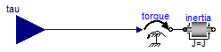

For all models in this package an FMU must be generated
Extends from Modelica.Icons.Package (Icon for standard packages).
| Name | Description |
|---|---|
| InertiaFromFile |

Model that shows the usage of Examples.readRealParameter and Examples.expression. The model has 3 parameters and the values of these parameters are read from a file.
Extends from Modelica.Blocks.Interfaces.BlockIcon (Basic graphical layout of input/output block).
| Type | Name | Default | Description |
|---|---|---|---|
| String | file | "noFileDefined" | File on which data is present |
| Type | Name | Description |
|---|---|---|
| input RealInput | tau | Accelerating torque acting at flange (= -flange.tau) |